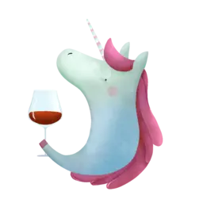

Welcome to Barberry Garden, a place where we drink wine and talk about wine.
Independent (self-funded) website focused on the wine world. How are wines grown and made? Who is making them? Where and since when? And even how do they taste and why? I am no sommelier and am not affiliated with any wine importer or store. I am just a casual who loves to drink, take notes and tinker with Emacs.
This site is still under development. So most of the planned features are not available yet. Check out the latest Site Updates article to learn about the development process.
Contact
I love receiving mails. So if you wish to talk about wine or report something on this site, just reach me via email.
- Join Telegram channel (UA) to get updates about upcoming tasting events I organise in Kyiv.
- Follow me on Vivino.
Posts
- (EN) Il Pirata Vol. 2 - January 17, 2023 #report
- (EN) Yearly events report - Vol. 2022 - December 31, 2022
- (EN) Classy Bubbles Vol. 2 - December 27, 2022 #report
- (EN) To Each Their Own Vol. 1 - December 13, 2022 #report
- (EN) Grapes of Piedmont - December 5, 2022 #report
- (EN) Monthly report - October 2022 - November 1, 2022
- (EN) A bit of Spain - October 25, 2022 #report
- (EN) Atypical ver.1.22474487139... - October 18, 2022 #report
…or you can find more in the archives.
Latest reviews
- Thursday, 19 January 2023
-
- 5.75 - Brand Bros Flora NV
- Wednesday, 18 January 2023
-
- 7.40 - Kmetija Štekar Sivi 2021
- 7.50 - Peixes Camándula 2019
- 7.25 - Yalumba The Y Series Riesling 2021
- Tuesday, 17 January 2023
-
- 9.00 - Arianna Occhipinti Il Frappato 2013
- 8.00 - COS Ramí 2019
- 8.00 - Gulfi Nerojbleo 2009
- 7.80 - Marco De Bartoli Terzavia 2018
- 7.50 - Planeta Cometa 2020
- 8.00 - Tenuta di Castellaro Corinto 2017
- 8.50 - Tenuta di Fessina A’Puddara Etna Bianco 2010
…or you can find more in the archives.